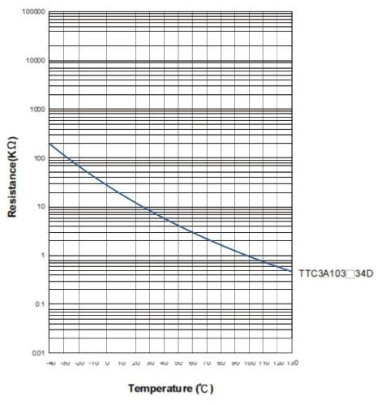

The Grove - Temperature Sensor uses a Thermistor to detect the ambient temperature. The resistance of a thermistor will increase when the ambient temperature decreases. It's this characteristic that we use to calculate the ambient temperature. The detectable range of this sensor is -40 - 125ºC, and the accuracy is ±1.5ºC
I need a Grove - Temperature Sensor
Note: This page is for Grove - Temperature Sensor v1.0 only, V1.1/1.2 please refer to Grove - Temperature Sensor V1.2
Here is an example to show you how to read temperature information from the sensor.
1. Connect the module to the Analog port 0 of Grove - Basic Shield using the 4-pin grove cable.
2. Plug the Grove - Basic Shield into Arduino.
3. Connect Arduino to PC by using a USB cable.
4. Upload Code below. Please click here if you do not know how to upload.
/* /* Grove - Temperature Sensor demo v1.0 * This sensor detects the environment temperature, * Connect the signal of this sensor to A0, use the * Serial monitor to get the result. * By: http://www.seeedstudio.com */ #include <math.h> int a; float temperature; int B=3975; //B value of the thermistor float resistance; void setup() { Serial.begin(9600); } void loop() { a=analogRead(0); resistance=(float)(1023-a)*10000/a; //get the resistance of the sensor; temperature=1/(log(resistance/10000)/B+1/298.15)-273.15;//convert to temperature via datasheet ; delay(1000); Serial.print("Current temperature is "); Serial.println(temperature); }
5. You can check the readings via the Serial Monitor. The default unit is Celsius degree.
As a reference, the following is the resistance curve of TTC3A103*39H, the thermistor we used on this sensor. The higher the temperature goes, the smaller the resistance becomes.

1.You should have got a raspberry pi and a grovepi or grovepi+.
2.You should have completed configuring the development enviroment, otherwise follow here.
3.Connection
4.Navigate to the demos' directory:
cd yourpath/GrovePi/Software/Python/
nano grove_temperature_sensor.py # "Ctrl+x" to exit #
import time import grovepi # Connect the Grove Temperature Sensor to analog port A0 # SIG,NC,VCC,GND sensor = 0 while True: try: temp = grovepi.temp(sensor,'1.1') print "temp =", temp time.sleep(.5) except KeyboardInterrupt: break except IOError: print "Error"
5.Run the demo.
sudo python grove_temperature_sensor.py
To begin editing programs that live on BBG, you can use the Cloud9 IDE.
As a simple exercise to become familiar with Cloud9 IDE, creating a simple application to blink one of the 4 user programmable LEDs on the BeagleBone is a good start.
If this is your first time to use Cloud9 IDE, please follow this link.
Step1: Click the "+" in the top-right to create a new file.


Step2: Copy and paste the following code into the new tab
from Adafruit_I2C import Adafruit_I2C import time ADDR_ADC121 = 0x50 REG_ADDR_RESULT = 0x00 REG_ADDR_ALERT = 0x01 REG_ADDR_CONFIG = 0x02 REG_ADDR_LIMITL = 0x03 REG_ADDR_LIMITH = 0x04 REG_ADDR_HYST = 0x05 REG_ADDR_CONVL = 0x06 REG_ADDR_CONVH = 0x07 i2c = Adafruit_I2C(ADDR_ADC121) class I2cAdc: def __init__(self): i2c.write8(REG_ADDR_CONFIG, 0x20) def read_adc(self): "Read ADC data 0-4095." data_list = i2c.readList(REG_ADDR_RESULT, 2) #print 'data list', data_list data = ((data_list[0] & 0x0f) << 8 | data_list[1]) & 0xfff return data if __name__ == '__main__': # Connect the Grove - I2C ADC to I2C Grove port of Beaglebone Green. adc = I2cAdc() while True: print 'sensor value ', adc.read_adc() time.sleep(.2)
Step3: Save the file by clicking the disk icon with a name "grove_i2c_adc.py".
Step4: Create a new file Copy the following code into the new tab and save it with the .py extension.
import time import math import grove_i2c_adc import Adafruit_BBIO.GPIO as GPIO BUZZER = "P9_22" # GPIO P9_22 GPIO.setup(BUZZER, GPIO.OUT) # The threshold to turn the buzzer on 28 Celsius THRESHOLD_TEMPERATURE = 28 adc = grove_i2c_adc.I2cAdc() # The argument in the read_temperature() method defines which Grove board(Grove Temperature Sensor) version you have connected. # Defaults to 'v1.2'. eg. # temp = read_temperature('v1.0') # B value = 3975 # temp = read_temperature('v1.1') # B value = 4250 # temp = read_temperature('v1.2') # B value = 4250 def read_temperature(model = 'v1.2'): "Read temperature values in Celsius from Grove Temperature Sensor" # each of the sensor revisions use different thermistors, each with their own B value constant if model == 'v1.2': bValue = 4250 # sensor v1.2 uses thermistor ??? (assuming NCP18WF104F03RC until SeeedStudio clarifies) elif model == 'v1.1': bValue = 4250 # sensor v1.1 uses thermistor NCP18WF104F03RC else: bValue = 3975 # sensor v1.0 uses thermistor TTC3A103*39H total_value = 0 for index in range(20): sensor_value = adc.read_adc() total_value += sensor_value time.sleep(0.05) average_value = float(total_value / 20) # Transform the ADC data into the data of Arduino platform. sensor_value_tmp = (float)(average_value / 4095 * 2.95 * 2 / 3.3 * 1023) resistance = (float)(1023 - sensor_value_tmp) * 10000 / sensor_value_tmp temperature = round((float)(1 / (math.log(resistance / 10000) / bValue + 1 / 298.15) - 273.15), 2) return temperature # Function: If the temperature sensor senses the temperature that is up to the threshold you set in the code, the buzzer is ringing for 1s. # Hardware: Grove - I2C ADC, Grove - Temperature Sensor, Grove - Buzzer # Note: Use P9_22(UART2_RXD) as GPIO. # Connect the Grove Buzzer to UART Grove port of Beaglebone Green. # Connect the Grove - I2C ADC to I2C Grove port of Beaglebone Green, and then connect the Grove - Temperature Sensor to Grove - I2C ADC. if __name__ == '__main__': while True: try: # Read temperature values in Celsius from Grove Temperature Sensor temperature = read_temperature('v1.2') # When the temperature reached predetermined value, buzzer is ringing. print "temperature = ", temperature except IOError: print "Error"
Step5: Connect Grove Temperature to Grove I2C ADC which is connected to Grove I2C socket on BBG.
Step6: Run the code. You'll find that the terminal outputs Temperature value every 2 seconds.